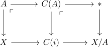
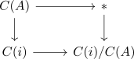
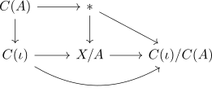

map from the mapping cone of a cofibration to the collapse as homotopy equivalence
Proposition
Let $X,A$ be topological spaces and $\iota: A \rightarrow X$ a cofibration. Then the canonical map from the mapping cone to the collapse,
\begin{align*}
f: C(i) \rightarrow X/A
\end{align*}
is a Homotopy equivalence
Proof
we note, that by the glueing lemma for pushouts, the following diagram is a pushout

Furthermore, $C(A)/C(i)$ is a pushout:

hence by universal property unique up to unique isomorphism, there exists a homeomorphism making

Therefore there exists a unique isomorphism
\begin{align*}
C(\iota) / C(A) \cong X/A
\end{align*}
Since cofibration are mirrored under pushouts, it follows, that
\begin{align*}
C(A) \rightarrow C(\iota)
\end{align*}
is a cofibration and thus as the cone is contractible
\begin{align*}
C(\iota) \rightarrow C(i)/(C(A)) \cong X/A
\end{align*}
is a homotopy equivalence by cofibration from a contractible space induces homotopy equivalence to the collapse.